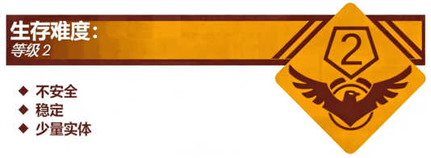

Level 2 - "教学楼走廊"

描述：

Level 2 是 The School Rooms 的第三个主要区域，它在学校中的作用类似于一个“枢纽”，将各个层级连接在一起。Level 2 的主体是一条走廊，走廊的一边是由玻璃和钢管制成的栏杆，阳光可以透过栏杆照在走廊上，另一边是一面墙壁，墙壁上装有几扇门和窗户，在大部分情况下，窗户都是被遮光布或窗帘挡住的，只有在少数情况下才能透过窗户看到里面的教室。Level 2 的顶端装有 LED 灯，为整个走廊进行照明。
值得注意的是，The School Rooms 中似乎不止存在一个 Level 2，据流浪者汇报，从教学楼底部往上望去，可以看到好几个与 Level 2 类似的结构，这似乎与电梯的层数有直接关系，即 Level 2 的个数=教学楼的层数-1，其中电梯的 1 层为 Level 1。该层级常有“老师”或“段长”巡逻或经过，请流浪者提高警惕。
此外，此层级在即将进入“上课时间”时，会播放上课铃声，在播放上课铃声的 1 分钟内会有大量“老师”涌入，在播放眼保健操铃声时会有大量的“执勤队员”进入，直到播放下课铃声后撤离。请流浪者在听到对应的铃声时务必做出对应的反应和应对措施。
实体：
Level 2 中最常见的实体为“老师”和“执勤队员”，其中“老师”大多会在“上课时间”通过该层级进入教室上课，在“下课时间”通过此层级前往另一个教室或办公室。“执勤队员”则多在播放眼操铃声时进入该层级巡逻，在“下课时间”也可能来到该层级检查纪律。
基地、前哨和社区：
本层级存在多个组织和前哨站，流浪者可以很轻易地找到帮助：
R.S.S ——“休闲娱乐基地”：位于 Level 2 与 Level 2.2 的交界处，流浪者可以在此基地得到帮助，也可以使用“层级代币”获取关键的物资（包含饮料，零食，小物件等），但要小心被“老师”没收。
T.L.T —— “厕所装修大队”：喜欢一下课就去搞一些非法事项的神秘组织……
跑抓社：在 Level 1 和 Level 1.1 活动的跑抓社有时候也会在 Level 2 进行“跑跑抓”游戏，但依旧很容易被“执勤队员”制裁。
S.M.E.G —— “Level 2 研究所”：S.M.E.G用于调查 Level 2 信息的组织，共有5名成员组成。
The School Rooms 八卦交谈社：由 3 名流浪者组成，喜欢在 Level 2 谈论关于其他流浪者或者“老师”的八卦，对“老师”和“执勤队员”的制裁有了应对方法，但有时候还是可能在不知觉间被“老师”制裁。
入口和出口：
入口：在“楼梯间”走楼梯到大部分楼层都会进入该层级，你也可以通过乘坐电梯来到这里。
出口：进入走廊旁边的门，会把你带到不同的层级：